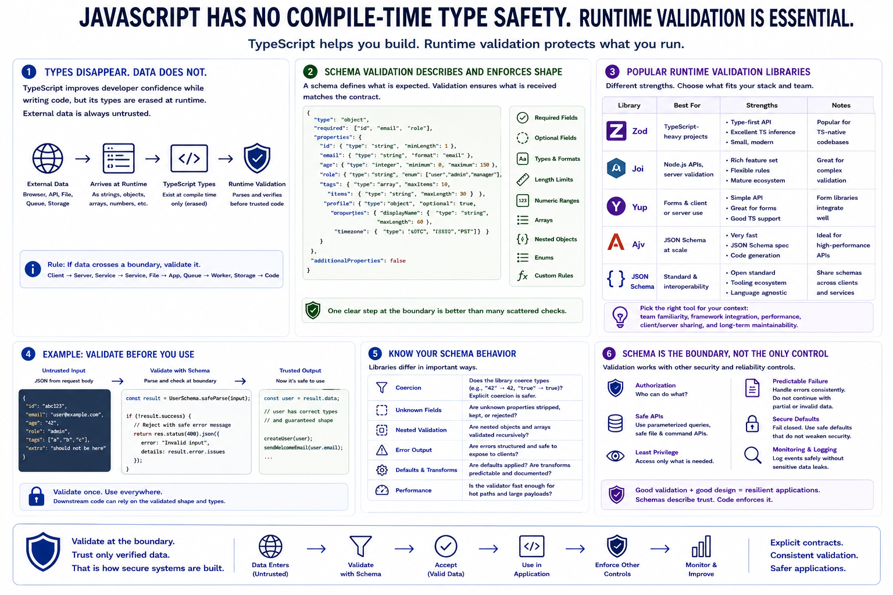

Runtime Validation and Schema Libraries
Connecting to LMS... Progress: in progress

Narration
JavaScript has no compile-time type safety by default, and even TypeScript does not remove the need for runtime validation. TypeScript improves developer confidence while writing code, but its types are erased when the program runs. External data from browsers, APIs, files, queues, or storage still arrives as runtime values that must be parsed and checked before trusted code relies on them.
Schema validation provides a practical way to define and enforce expected structure. A schema can describe required fields, optional fields, types, formats, length limits, numeric ranges, arrays, nested objects, enums, and custom rules. Instead of writing many ad hoc checks, developers can place a clear validation step at the boundary where data enters the application.
Libraries such as Zod, Joi, Yup, Ajv, and JSON Schema can support runtime validation. They differ in style and ecosystem fit. Zod is often used with TypeScript-heavy projects. Joi and Yup are common in server and form validation patterns. Ajv validates JSON Schema efficiently. The best choice depends on the application, team familiarity, framework integration, and need to share schemas across services or clients.
Schema validation still requires judgment. Developers should understand whether a library coerces values, strips unknown fields, allows extra properties, validates nested objects, or produces errors that are safe to expose. The schema is the boundary, but the surrounding code must still enforce authorization, use safe APIs, and handle failures predictably.